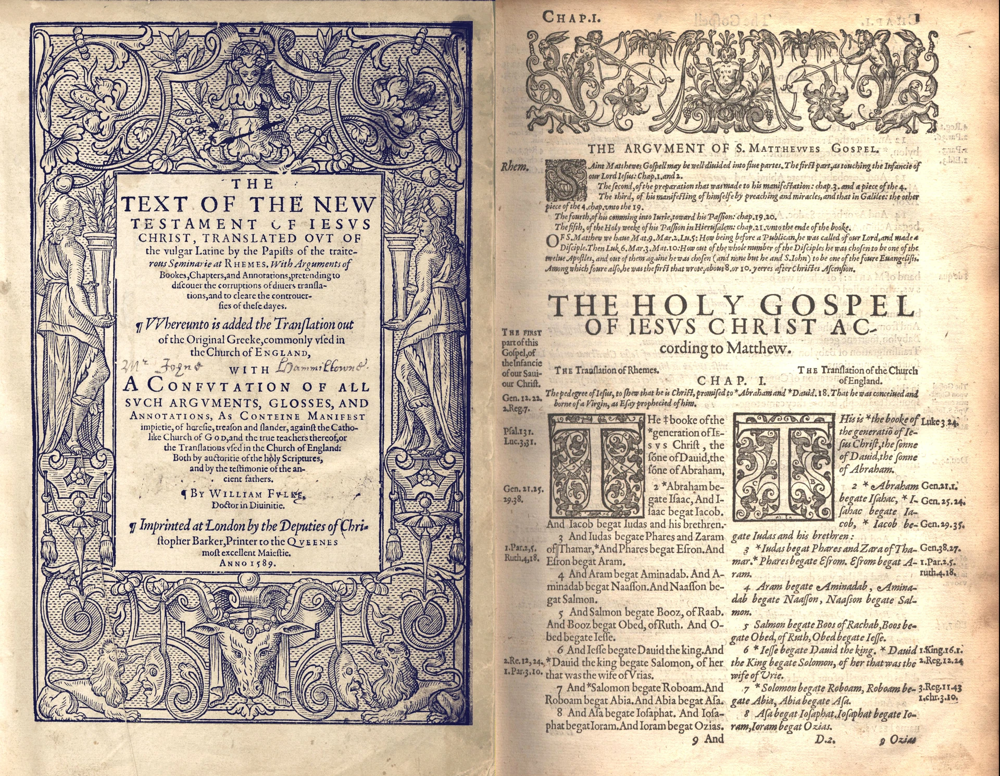
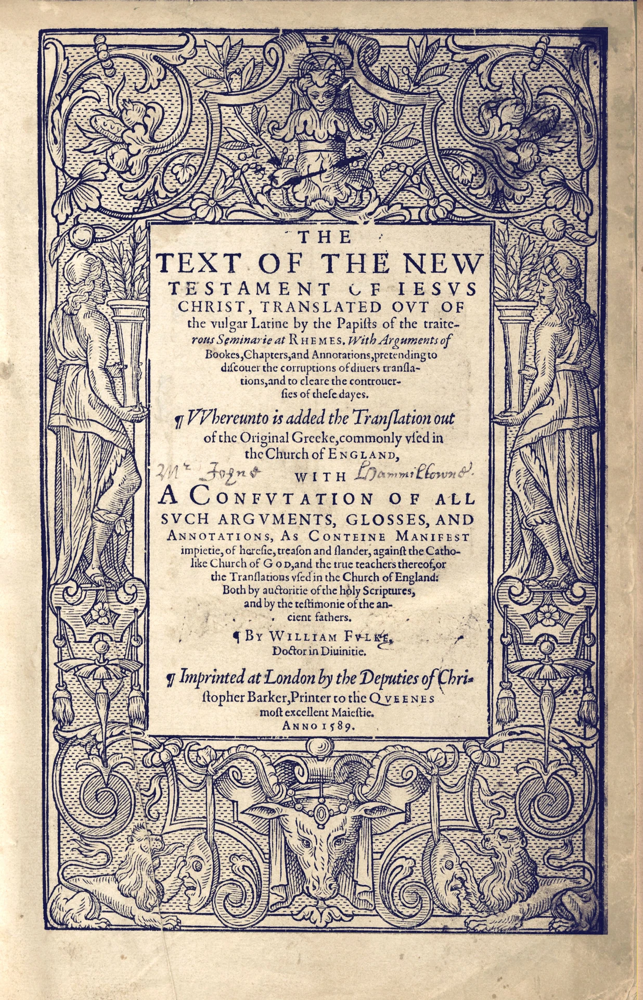
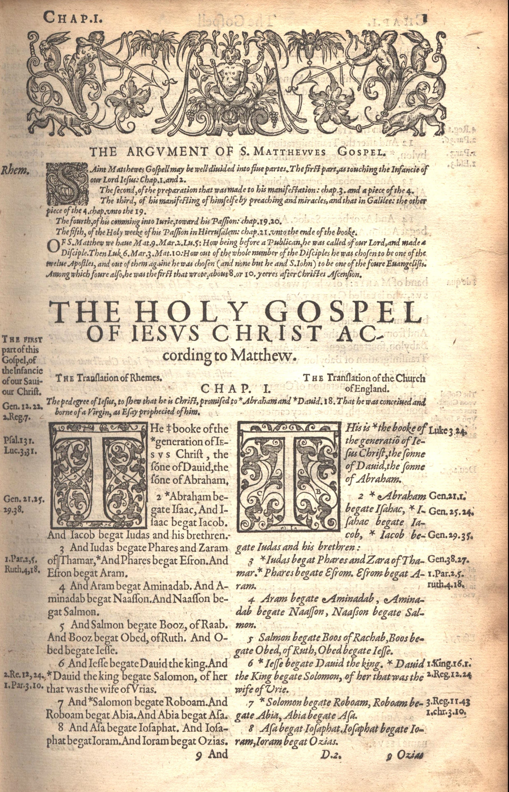

아직 펼치지 않은 카드모두의 말로 찍은 성경 · 5두에-랭스 성경개신교 학자가 가톨릭 영어 성경이 못하다는 걸 보이려고 두 번역을 나란히 찍었어요. 그런데 결과는 뜻밖이었어요. 무슨 일이 생겼을까요?두 가지 번역을 나란히 찍은 성경이래. 무엇이 다를까?
1582년 · 1589년랭스에서 옮기고, 런던에서 나란히 찍다
두에-랭스 성경
1589년 런던에서, 가톨릭의 랭스 신약과 개신교의 주교 성경을 한 쪽에 나란히 찍은 책이 나왔어요. 랭스 번역을 반박하려고 엮은 책이에요. 첫 장의 긴 제목을 한 줄씩 펼쳐 읽고, 야고보서의 한 구절을 1611년 번역자의 자리에서 옮겨 봐요.
두 가지 성경을 나란히 찍은 책이 있대. 첫 장부터 한 줄씩 펼쳐 볼까?
검수 전 시안이에요(기준서 2판). 표제지의 글은 대학 도서관 자료집에 옮겨 적힌 것을 따랐고, 그림 속 글씨를 직접 읽어 옮기지 않았어요. 옛 영어 성경들의 구절은 여러 번역을 나란히 실은 자료와 1902년 카를턴의 연구를 따랐어요. 상상은 ‘눈 감고 상상해 보기’에만 썼어요.
시안 확인용카드 단계 미리 보기
1
긴 제목을 한 줄씩
1589년 런던에서 큰 책 한 권이 나왔어요. 개신교 목사이자 신학자인 윌리엄 풀크(William Fulke)가 엮은 신약이에요. 첫 장(표제지)에는 책 이름이 아주 길게 찍혀 있어요.
이 긴 이름이 책의 차림표예요. 무엇을 싣고, 무엇을 하려는 책인지가 다 들어 있어요.
종이 아래쪽 굴대를 끌어 내리거나 ‘한 줄 더 펼치기’를 눌러, 표제지를 위에서부터 한 줄씩 읽어 보세요.

표제지(첫 장) — 이 안내서가 그림의 왼쪽 반을 잘랐어요 · 자료: 풀크의 대조판 신약(1589) · 퍼블릭 도메인 · 위키미디어 공용
펼친 만큼 줄이 읽혀요. 읽은 줄은 아래에 차례로 모여요.
끝까지 펼쳤어요. 맞서려고 만든 책이 상대의 번역을 통째로 싣는다는 것이, 첫 장에 다 적혀 있어요.
풀크가 처음부터 이 큰 책을 낸 것은 아니에요. 1582년 랭스 신약을 옮긴 그레고리 마틴(Gregory Martin)은 같은 해에 책을 하나 더 냈어요. 개신교 쪽 영어 성경들이 일부러 그릇된 가르침이 들어가게 옮겼다고 따지는 책이었어요.
풀크는 이듬해 그 책에 답하는 책을 냈어요. 그다음에 상대의 번역을 통째로 싣고 한 줄 한 줄 반박하는 이 책을 엮었어요.
다른 사람이 만든 성경을 통째로 싣고, 하나하나 반박하려고 만든 책이래.
물어보기책 이름이 이렇게 길어! 맨 아래에는 무엇이 적혀 있을까?
2
두 단, 한 구절
같은 책의 마태복음 첫 쪽이에요. 왼쪽 단 위에는 ‘랭스의 번역’, 오른쪽 단 위에는 ‘잉글랜드 교회의 번역’이라고 찍혀 있어요. 랭스 쪽은 바로 선 글꼴, 잉글랜드 교회 쪽은 기울인 글꼴이에요.
신약 전체가 이렇게 두 단으로 이어져요. 랭스 신약의 줄거리 풀이와 주석도 다 실었어요. 맨 위에 ‘Rhem.’ 표시가 붙은 마태복음 줄거리가 그 하나예요. 장마다 끝에는 풀크의 반박이 붙어요.
야고보서 1장 5절은 지혜가 모자라면 하나님께 구하라는 구절이에요. 하나님은 모든 사람에게 아낌없이 주시고 나무라지 않으신다고 해요. 이 ‘나무라지 않으신다’를 옛 영어 성경들은 저마다 다르게 옮겼어요.

반박하려던 책이 뜻밖의 길을 열었어요. 성경 박물관은 이 책 덕분에 잉글랜드의 가톨릭 신자들도 랭스 신약을 더 쉽게 구하게 되었다고 적어요.
1902년 제임스 카를턴(James Carleton)은 1611년 킹 제임스 성경을 옮긴 사람들도 아마 이 책으로 랭스 신약을 알았을 거라고 짐작했어요.
1611년 킹 제임스 성경을 옮기던 사람이라면, 야고보서 1장 5절의 ‘나무라지 않으신다’를 어떻게 옮겼을까요?
왼쪽은 바로 선 글씨, 오른쪽은 기울어진 글씨야. 같은 구절을 두 가지로 옮겼어.
물어보기두 단 모두 커다란 글자로 시작해. 무슨 글자일까?
눈 감고 상상해 보기
촛불 곁에 커다란 책이 펼쳐져 있어요. 손가락 하나는 왼쪽 단을, 다른 하나는 오른쪽 단을 짚고 천천히 내려가요. 같은 구절인데 낱말이 달라요. 한 낱말 앞에서 손가락이 멈추고, 입속으로 두 말을 번갈아 읽어 봐요.
눈을 감아 봐. 커다란 책 위에 두 손가락. 나란히 내려가다가, 어? 낱말이 달라. 손가락이 멈춰.
나의 자리
처음엔 어느 번역이 못한지 보이려고 나란히 놓은 두 단이었어요. 이제 이 쪽을 다시 보면, 두 단 사이에서 무엇이 보이나요?
흉보려고 나란히 놓았는데, 오히려 서로 배웠대. 이제 두 단을 보면 어떤 생각이 들어?
마음에 닿는 한 줄을 고르거나 직접 써 보세요. 한 줄을 남기면 이 자리의 도장이 찍혀요. 이 기기에만 저장돼요.
더 깊이
궁금한 칸만 펼쳐 읽어도 괜찮아요.
알고 보면
주고 나서 나무라지 않음 세이어의 그리스어 사전은 야고보서 1장 5절의 ‘나무라다’를 ‘받은 은혜를 들먹이며 나무라다’라는 뜻으로 풀어요. 아낌없이 주시고, 준 것을 두고 나무라지 않으신다는 말이에요.
네 번 찍힌 책 풀크의 대조판은 1589년 뒤에도 1601년, 1617년, 1633년에 다시 나왔어요. 1601년 판은 크리스토퍼 바커의 아들 로버트 바커가 찍었어요.
300년 뒤에도 이 책으로 카를턴은 1902년 책 「영어 성경을 만드는 데 랭스가 맡은 몫」에서 신약을 구절마다 견준 표를 만들었어요. 머리말에서 그는 이 일에 풀크의 1601년 판을 썼다고 밝혀요. 랭스와 주교 성경이 나란히 찍혀 있어서였어요.
한 구절, 여러 옛 번역
야고보서 1장 5절의 ‘나무라지 않으신다’를 옛 영어 성경들은 이렇게 옮겼어요. 위클리프 성경 말고는 오늘 철자로 적었어요.
위클리프 성경(14세기 말) vpbreidith not
틴데일 신약(1526) · 커버데일 성경 · 주교 성경 casteth no man in the teeth
제네바 성경(1560) reproacheth no man
랭스 신약(1582) upbraideth not
킹 제임스 성경(1611) upbraideth not
기록마다 다른 점
어느 단이 기울인 글꼴일까 모건 도서관의 1589년 판 목록은 주교 성경이 바로 선 글꼴, 랭스가 기울인 글꼴이라고 적었어요. 같은 도서관의 1601년 판 목록은 왼쪽 랭스가 바로 선 글꼴이라고 적었어요. 이 그림(1589년 판)에서는 왼쪽 랭스 단이 바로 선 글꼴이에요.
‘upbraideth not’은 랭스에서 왔을까 카를턴은 킹 제임스 성경이 이 구절에서 옛 번역들 대신 랭스의 말을 골랐다고 보았어요. 그런데 그는 위클리프 성경을 견주는 데서 뺐어요. 머리말에서 이 물음과 맞닿지 않는다고 했어요. 위클리프 성경에도 ‘vpbreidith not’이 있으니, 이 말이 랭스에서 처음 나온 것은 아니에요.
더 찾아보기
긴 제목 끝까지 금박
표제지를 끝까지 펼쳐 여덟 줄을 다 읽으면 카드에 금박이 입혀져요.
표제지를 끝까지 펼쳐 여덟 줄 읽기
1611년 번역자의 자리 채색
둘 가운데 하나만 해도 카드가 채색돼요.
1611년 번역자의 자리에서 야고보서 1장 5절 옮겨 보기
아이와 함께 ‘영화처럼 보기’를 끝까지 보기
근거 보기 (19)
- ‘잉글랜드 교구의 책들(Books in English Parishes)’ 자료집(사이먼 프레이저 대학 도서관 누리집) — 1589년 판 표제지 옮겨 적기, 크리스토퍼 바커의 대리인들이 찍음, 풀크 1538~1589, 랭스와 주교 성경을 두 단에 나란히 · 장마다 끝에 풀크의 풀이, 랭스는 주로 그레고리 마틴이 불가타에서 옮김
- UCLA 클라크 도서관 「The Text of the New Testament of Iesus Christ」 — 풀크는 가톨릭에 맞선 사람, 주교 성경과 랭스를 나란히, 신학교가 잠시 랭스에 있다가 두에로 돌아감, 반박이 오히려 랭스 신약을 더 널리 퍼뜨림, 랭스의 낱말이 킹 제임스 성경에, 1589년은 풀크가 세상을 떠난 해
- 성경 박물관: 대조판 신약 둘째 판(1601) — 풀크는 청교도 목사이자 신학자, 랭스를 주교 성경과 나란히 실어 한 줄씩 반박, 뜻하지 않게 잉글랜드의 가톨릭 신자들이 랭스 신약을 더 쉽게 구함
- 성경 박물관: 풀크 「A Defense of the Sincere and True Translation」(1583) — 마틴이 1582년에 개신교 영어 성경들이 일부러 이단의 잘못을 넣었다고 주장, 풀크가 이 책으로 반박, 뒤에 더 큰 반박인 대조판
- 성경 박물관: 대조판 신약 넷째 판(1633) — 랭스 신약은 개신교 가르침을 반박하려는 주석을 붙인 불가타 영어 번역
- 프레더릭 케니언 「English Versions」(헤이스팅스 성경 사전, 1909 · Bible Research 보관) — 풀크가 랭스 신약을 1572년 주교 성경과 나란히 찍고 주석과 반박을 실음, 꽤 널리 읽힘, 킹 제임스 번역자들이 쓴 판본의 하나, 그레고리 마틴
- 제임스 카를턴 「The Part of Rheims in the Making of the English Bible」(옥스퍼드, 1902 · 인터넷 아카이브) — 풀크는 펨브로크 홀 학장, 마틴의 「발견」에 먼저 답함, 1589년 판과 1601·1617·1633년 판, 번역자들이 “아마도” 풀크의 책으로 랭스를 알았을 것(짐작), 58~59쪽 야고보서 1장 5절(upbraideth not을 reproacheth no man·casteth no man in the teeth보다 고름), 표 I 203쪽, 머리말(1601년 판을 씀 · 위클리프는 이 물음과 맞닿지 않음)
- Faith of God 「The New Testament compared: James」 — 야고보서 1장 5절: 위클리프 vpbreidith not, 틴데일 1526·1534·커버데일·주교 성경 casteth no man in the teeth, 제네바 reprocheth no man, 킹 제임스 1611 vpbraideth not
- 두에-랭스 성경 대조 누리집 — 야고보서 1장 5절, 1582~1610년 원래 판 “upbraideth not”(오늘 철자)
- 세이어 그리스어 사전(Blue Letter Bible) ὀνειδίζω — 야고보서 1장 5절: ‘받은 은혜를 들먹이며 나무라다’
- 웹스터 사전(1913) upbraid — ‘나무라다, 이빨에 던지다(cast something in the teeth of)’
- 메리엄-웹스터 사전 argument 3 — 책의 요약·줄거리
- 메리엄-웹스터 사전 catholic — 보편 교회, 그리스어 katholikos(보편적인)에서
- 모건 도서관 PML 18409(1589년 판) — 런던, 크리스토퍼 바커의 대리인들, 1589 · 주교 성경 바로 선 글꼴·랭스 기울인 글꼴이라고 적음(기록마다 다른 점)
- 모건 도서관 PML 128916(1601년 판) — 로버트 바커가 찍음, 랭스가 왼쪽 바로 선 글꼴·주교 성경이 오른쪽 기울인 글꼴, 장마다 뒤에 주석
- 털리도 미술관: 킹 제임스 성경(1611) — 로버트 바커는 엘리자베스 1세의 성경 인쇄인 크리스토퍼 바커의 아들, 1599년 가업을 이음, 1611년 킹 제임스 성경을 찍음
- 이스트캐롤라이나 대학 도서관: 1633년 판 목록 — 표제지의 “sometime Mr. of Pembroock Hall in Cambridge”, 풀크 1538~1589
- 위키미디어 공용: 1589년 대조판의 표제지와 마태복음 첫 쪽(퍼블릭 도메인) 정보
- 위키백과 「Douay–Rheims Bible」(길잡이로만)
그림·사진·소리 출처
‘처음 만나는 기독교 문화’의 깊은 카드예요. 카드 단계와 남긴 글은 이 기기에만 저장돼요.